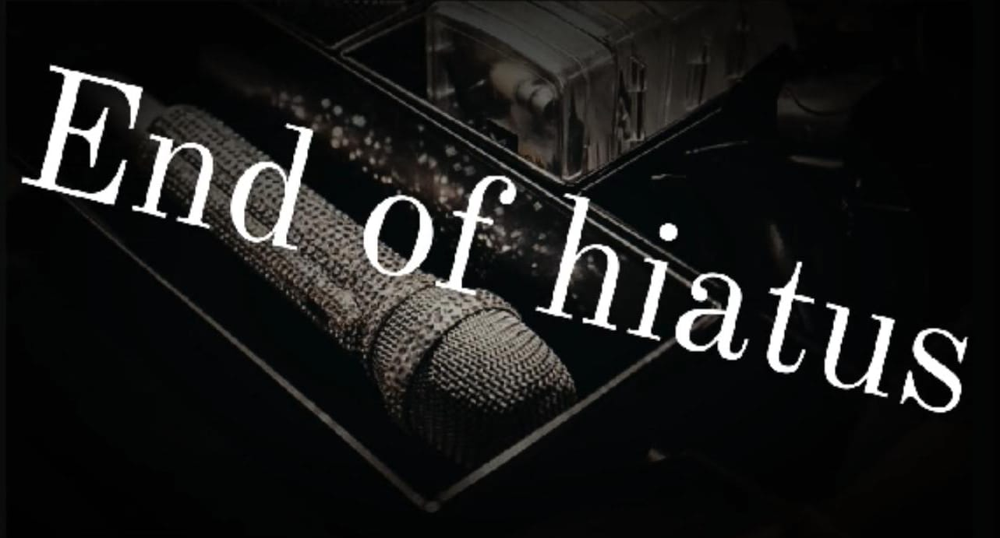

End of LUCAS hiatus
by Kamya | August 17, 2024 | Career
LUCAS’s hiatus was undoubtedly a challenging time for both him and his fans. As someone who has always brought so much energy and charisma to the stage, his absence was deeply felt across the K-Pop community. However, it's important to recognize that breaks, even difficult ones, can lead to personal growth and self-discovery.
In my opinion, LUCAS is a truly great idol. He has a rare combination of talent, charisma, and authenticity that resonates with fans around the world. Despite the challenges he's faced, I believe his passion for music and performing will shine through as he moves forward. His hiatus, though difficult, may very well be a stepping stone to an even brighter future where he can continue to inspire and connect with fans on a deeper level.